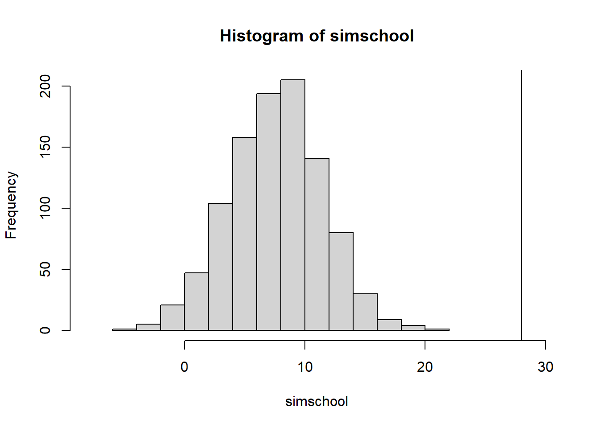

Chapter 6 Hierarchical Models
Many problems involve multiple parameters that are related somehow by the structure of the problem. Each \(\theta_j\) are viewed as a sample from a common population distribution, that is governed by hyperparameters.
Non-hierarchical models have inferior performance for prediction because they overfit the training data that only fit the current data well, this is because the uncertainty of the prior parameters are not included within the model. Hierarchical models avoid this problem because the model is structured around the dependence within the parameters.
6.1 Constructing a parameterized prior distribution
The example from 70 lab rat can use a fixed prior distribution under the binomial likelihood, and a beta prior. One can choose fixed estimates for the prior parameters \(\alpha,\beta\), or can use the moments to estimate the prior parameters. This is not a Bayesian model, and is considered an empirical Bayesian model. Given 70 historical experiments, the sample mean and sample variance are used to solve for the beta mean/variance \(\alpha/\beta\) and \(\alpha/\beta^2\). Note that this is not a fully Bayesian approach.
Logic of combining information
Given 70 historical values, we combine all the parameters \(\theta_j\), for \(j=1,...,71\) with the addition of a newly performed experiment. Combining these into a data set makes sense because there are some dependency of the parameters which is reflected into a full joint prior probability model.
6.2 Exchangeability and hierarchical models
Consider a set of experiments j=1,…,J in which j has the data \(y_j\) and parameter \(\theta_j\) with likelihood \(p(y_j|\theta_j)\). Let \(\theta_j \sim N(\mu_j,\sigma^2)\) come from a superpopulation with common fixed variance.
Exchangeability
If no information, other than the data \(y_j\) is availble to distinguish any of the \(\theta_j\) from any others, and no ordering or grouping of parameters can be made, then by symmetry among the parameters called exchangeability. The joint distribution \(p(\theta_1,...,\theta_J)\) is invariant to permutations of the indices (1,…,J). Generally, the less we know about a problem the more we can rely on the exchangeability assumption.
The form of exchangeabile distribution each parameter \(\theta_j\) as an independent sample from a prior population distribution governed by some unknown \(\phi\) is written as
\[\begin{equation} p(\theta|\phi) = \prod_j p(\theta_j| \phi) \end{equation}\]
in general \(\phi\) is unknown so we average over the uncertainty of \(\phi\)
\[\begin{equation} p(\theta) = \int \prod_j p(\theta_j| \phi)* p(\phi)d\phi \end{equation}\]
This form is the mixture of independent identical distributions.
A related result de Finetti’s theorem states that as the limit of \(J\to \infty\) any suitably exchangeable distribution on (\(\theta_1,...,\theta_J)\) can be expressed as a mixture of identical and independent distributions. This theorem connects exchangeability to IID assumptions routinely practiced.
Exercises
Q1
A box has 1 black and 1 white ball
- a i) pick 1 ball, y1, return it, and draw another y2. This is exchangeable, because other than y1, we have no information about what the draw y2 could be.
- a ii) we have independence by replacement
- a iii) since the draws are identical, then y1 and y2 are both independent draws and the pair of draws can be independent.
-b i) drawing without replacement, y1 is not exchangeable because given y1 color, we know what y2 color is. -b ii) not independent -b iii) as a pair independent (RB) independent of a second pair (BR) with order then the order RB is independent of BR if order matters.
-c i) if there were a million balls, then due to large numbers this is an exchangeable and independent process.
Q2
For unknown model parameters (a) we have total of n black and white balls, then this is an exchangeable and independent process. (b) due to ignorance we have exchangeability, but we do not have independence since this is without replacement. (c) if we know how many colors balls there are then this is not an exchangeable process and not independent process for finite n. For large n, then we can assume independence and exchangeability.
Q3
all 8 parameters are estimated from sampling from the posterior \(p(\tau | y)\), for ease of data wrangling, we obtain the quantiles for each theta separately. but in each posterior estimation, all points are simulataneously estimated.
This reproduces Table 5.3 from the text.
school<-data.frame(school=LETTERS[1:8],
yj =c(28,8,-3,7,-1,1,18,12),
sigmaj = c(15,10,16,11,9,11,10,18))
school$sigma2j<-school$sigmaj^2
## reproducing section 5.5 on pooling
## pooled
ybar_pool<-sum(school$yj/school$sigmaj^2)/sum(1/school$sigmaj^2)
pool_var<-1/sum(1/school$sigmaj^2)
ybar_pool+2*sqrt(pool_var) # 15.82946## [1] 15.82946 ybar_pool-2*sqrt(pool_var) ## -0.5## [1] -0.4582216 ## classical test
sum( (school$yj-mean(school$yj))^2/school$sigmaj^2) ## 4.7 which is less than the X2 d.f (8) so MSB- MSW is negative. pooling is not appropriate.## [1] 4.775407 ## checking to see if 28 is from the pooled population
simschool <-rnorm(1000, mean= ybar_pool, sd=sqrt(pool_var))
hist(simschool,xlim=c(-8,30))
abline(v=max(school$yj ))
### the maximum observation School A = 28 points is not with the population, so pooling does not correct
###
## posterior simulation under a normal model
## yij | thetaj ~ N(thetaj, sigma^2)
## likelihood using sufficient statistics
## ybarj | thetaj ~ N(thetaj, sigmaj^2)
### prior on tau can follow a uniform distribution
## using a grid approach for tau
tau0= seq(0,40,by=0.01)
stepsize=0.01
# 5.20 total precision
vmu.inverse<-function(tau2,sigma2j){
sum(1/(sigma2j+tau2))
}
vmu<-sapply(tau0^2,function(x) vmu.inverse(x,school$sigmaj^2))
# total mean effect
muhat<-function(ybarj, sigma2j,tau2){
numer<- sum(ybarj/(sigma2j+tau2))
denom<- sum( 1/(sigma2j+tau2))
hat<- numer/denom
return(hat)
}
## marginal posterior distribution p(tau| y) 5.21
marginal.posterior.tau<-function(tau,sigma2j,ybarj){
tau2<-tau^2
prob.tau<-dunif(tau,min=0,max=40) ## assuming unif prior
vmu.inv<-vmu.inverse(tau2,sigma2j)
vmu<-sqrt(1/vmu.inv)
total.precision<-1/(sigma2j+tau2)
group.precision.term<- sqrt(total.precision)
group.mu<-muhat(ybarj,sigma2j,tau2)
exp.term<- exp(-1*(ybarj -group.mu )^2/(2*(sigma2j+tau2)))
group.prod<-prod( group.precision.term*exp.term)
final<- prob.tau*vmu*group.prod
return(final)
}
tt<-data.frame(tau0,pt=sapply(tau0,function(x) marginal.posterior.tau(x,school$sigma2j,school$yj)))
tt$scaled.prob<-tt$pt/sum(tt$pt)
plot(tt$tau0,tt$scaled.prob, main='marginal poster p(tau|y) Figure 5.5')
## prior on tau can follow a scaled inverse-X2(n-1,s^2) distribution
## alternatively we can use scaled inverse
## now that we have the distribution of tau, sample from it
## marginal posterior 5.19
muhat_given_tau.y<-sapply(tau0,function(x) muhat(school$yj,school$sigma2j,x^2))
vmu_given_tau.y<-1/(sapply(tau0^2,function(x) vmu.inverse(x,school$sigmaj^2)))
### FIX ME: sample mu
# equation 5.20
marginal.post.mu_given_tau.y<-function(yj,sigma2j,tau2){
muhat<-muhat(yj,sigma2j,tau2)
## precision term
vmu<-vmu.inverse(tau2,sigma2j)
mu<- rnorm(100,mean=muhat,sd=sqrt(1/vmu)) ## how many points per posterior tau
## we take the posterior mean given 1 value of tau
prob.mu<-dnorm(mean(mu),mean=muhat,sd=sqrt(1/vmu))
return( data.frame(mu=mean(mu),prob.mu=prob.mu))
}
## given mu, sample theta j
## conditional posterior for each theta j
## eq 5.17
conditional.posterior.thetaj<-function(yj,sigma2j,tau2,mu){
thetajhat<-(yj/sigma2j + mu/tau2)/(1/sigma2j+1/tau2)
vj<-1/((1/sigma2j)+(1/tau2))
nj<-length(thetajhat)
thetaj<- sapply(seq(1,nj),function(x) rnorm(1, thetajhat[x], sd=sqrt(vj)[x]))
prob.thetaj<-numeric(nj)
prob.thetaj<- sapply(seq(1,nj),function(x) dnorm(thetaj[x], mean=thetajhat[x], sd=sqrt(vj)[x]))
return( data.frame(thetaj=(thetaj),prob.thetaj=prob.thetaj))
}
posterior<-function(tau,sigma2j,yj){
tau2<-tau^2
post.tau<-marginal.posterior.tau(tau,sigma2j,yj)
post.mu<-marginal.post.mu_given_tau.y(yj,sigma2j,tau2)
post.theta<-conditional.posterior.thetaj(yj,sigma2j,tau2,post.mu$mu)
full.post<-data.frame(theta=post.theta$thetaj,pdf=post.tau*post.mu$prob.mu*post.theta$prob.thetaj)
return(full.post)
}
## simulate the effects of thetaj
## closely reproduces table 5.3 in section 5
theta1<- sapply(sample(tt$tau0,1000,prob=tt$scaled.prob),
function(x) posterior(x,school$sigma2j,school$yj)[1,1])
theta1[is.nan(theta1)]<-mean(theta1[!is.nan(theta1)])
t1q<-quantile(theta1,c(0.025,0.25,0.5,0.75,0.975),na.rm=TRUE)
theta2<- sapply(sample(tt$tau0,1000,prob=tt$scaled.prob),
function(x) posterior(x,school$sigma2j,school$yj)[2,1])
theta2[is.nan(theta2)]<-mean(theta2[!is.nan(theta2)])
t2q<-quantile(theta2,c(0.025,0.25,0.5,0.75,0.975),na.rm=TRUE)
theta3<- sapply(sample(tt$tau0,1000,prob=tt$scaled.prob),
function(x) posterior(x,school$sigma2j,school$yj)[3,1])
theta3[is.nan(theta3)]<-mean(theta3[!is.nan(theta3)])
t3q<-quantile(theta3,c(0.025,0.25,0.5,0.75,0.975),na.rm=TRUE)
theta4<- sapply(sample(tt$tau0,1000,prob=tt$scaled.prob),
function(x) posterior(x,school$sigma2j,school$yj)[4,1])
theta4[is.nan(theta4)]<-mean(theta4[!is.nan(theta4)])
t4q<- quantile(theta4,c(0.025,0.25,0.5,0.75,0.975),na.rm=TRUE)
theta5<- sapply(sample(tt$tau0,1000,prob=tt$scaled.prob),
function(x) posterior(x,school$sigma2j,school$yj)[5,1])
theta5[is.nan(theta5)]<-mean(theta5[!is.nan(theta5)])
t5q<- quantile(theta5,c(0.025,0.25,0.5,0.75,0.975),na.rm=TRUE)
theta6<- sapply(sample(tt$tau0,1000,prob=tt$scaled.prob),
function(x) posterior(x,school$sigma2j,school$yj)[6,1])
theta6[is.nan(theta6)]<-mean(theta6[!is.nan(theta6)])
t6q<-quantile(theta6,c(0.025,0.25,0.5,0.75,0.975),na.rm=TRUE)
theta7<- sapply(sample(tt$tau0,1000,prob=tt$scaled.prob),
function(x) posterior(x,school$sigma2j,school$yj)[7,1])
theta7[is.nan(theta7)]<-mean(theta7[!is.nan(theta7)])
t7q<-quantile(theta7,c(0.025,0.25,0.5,0.75,0.975),na.rm=TRUE)
theta8<- sapply(sample(tt$tau0,1000,prob=tt$scaled.prob),
function(x) posterior(x,school$sigma2j,school$yj)[8,1])
theta8[is.nan(theta8)]<-mean(theta8[!is.nan(theta8)])
t8q<-quantile(theta8,c(0.025,0.25,0.5,0.75,0.975),na.rm=TRUE)
allq<-rbind(t1q,t2q,t3q,t4q,t5q,t6q,t7q,t8q)
print(allq)## 2.5% 25% 50% 75% 97.5%
## t1q 0.5839184 7.231426 10.160991 16.452509 33.04674
## t2q -4.7693282 5.010447 7.809746 10.588842 20.14428
## t3q -12.4614452 2.185563 7.001321 9.394880 19.58651
## t4q -5.1606363 4.455238 7.576134 10.338840 20.94935
## t5q -9.1894383 1.863452 5.875025 8.356632 13.90535
## t6q -9.4517719 2.674650 6.693079 8.882628 15.70096
## t7q 0.2428817 7.294071 9.663081 14.549715 26.02979
## t8q -6.4089357 5.031162 7.990223 11.780557 26.20570i could not figure out how to take the margin across \(\mu\) for 5.6 and 5.7.
we found that our posterior effects had 4\(\%\) greater than the maximum observed value 28.4 whereas the text found 22/200 which is slightly larger from 200 simulations, we used 1,000.
abest<-table(theta1>(theta2) & theta1>theta3 & theta1>theta4 & theta1>theta5 & theta1>theta6 & theta1>theta7 &theta1>theta8)
bbest<-table(theta2>(theta1) & theta2>theta3 & theta2>theta4 & theta2>theta5 & theta2>theta6 & theta2>theta7 &theta2>theta8)
cbest<-table(theta3>(theta1) & theta3>theta2 & theta3>theta4 & theta3>theta5 & theta3>theta6 & theta3>theta7 &theta3>theta8)
dbest<-table(theta4>(theta1) & theta4>theta2 & theta4>theta3 & theta4>theta5 & theta4>theta6 & theta4>theta7 &theta4>theta8)
ebest<-table(theta5>(theta1) & theta5>theta2 & theta5>theta3 & theta5>theta4 & theta5>theta6 & theta5>theta7 &theta5>theta8)
fbest<-table(theta6>(theta1) & theta6>theta2 & theta6>theta3 & theta6>theta4 & theta6>theta5 & theta6>theta7 &theta6>theta8)
gbest<-table(theta7>(theta1) & theta7>theta2 & theta7>theta3 & theta7>theta4 & theta7>theta6 & theta7>theta6 &theta7>theta8)
hbest<-table(theta8>(theta1) & theta8>theta2 & theta8>theta3 & theta8>theta4 & theta8>theta5 & theta8>theta6 &theta8>theta7)
a<-abest['TRUE']/sum(abest)
b<-bbest['TRUE']/sum(bbest)
c<-cbest['TRUE']/sum(cbest)
d<-dbest['TRUE']/sum(dbest)
e<-ebest['TRUE']/sum(ebest)
f<-fbest['TRUE']/sum(fbest)
g<-gbest['TRUE']/sum(gbest)
h<-hbest['TRUE']/sum(hbest)6.2.0.1 Q3 part a
- 5.3a this is correct and is very close to section 5 results.
better<-matrix(0,nrow=8,ncol=8)
fillIn<-function(better,theta1,theta2,i=1,j=2){
pij<-table(theta1>theta2)/sum(table(theta1>theta2))
better[i,j]<-pij['TRUE']
return(better)
}
better<-fillIn(better,theta1,theta2,i=1,j=2)
better<-fillIn(better,theta1,theta3,i=1,j=3)
better<-fillIn(better,theta1,theta4,i=1,j=4)
better<-fillIn(better,theta1,theta5,i=1,j=5)
better<-fillIn(better,theta1,theta6,i=1,j=6)
better<-fillIn(better,theta1,theta7,i=1,j=7)
better<-fillIn(better,theta1,theta8,i=1,j=8)
better<-fillIn(better,theta2,theta1,i=2,j=1)
better<-fillIn(better,theta2,theta3,i=2,j=3)
better<-fillIn(better,theta2,theta4,i=2,j=4)
better<-fillIn(better,theta2,theta5,i=2,j=5)
better<-fillIn(better,theta2,theta6,i=2,j=6)
better<-fillIn(better,theta2,theta7,i=2,j=7)
better<-fillIn(better,theta2,theta8,i=2,j=8)
better<-fillIn(better,theta3,theta1,i=3,j=1)
better<-fillIn(better,theta3,theta2,i=3,j=2)
better<-fillIn(better,theta3,theta4,i=3,j=4)
better<-fillIn(better,theta3,theta5,i=3,j=5)
better<-fillIn(better,theta3,theta6,i=3,j=6)
better<-fillIn(better,theta3,theta7,i=3,j=7)
better<-fillIn(better,theta3,theta8,i=3,j=8)
better<-fillIn(better,theta4,theta1,i=4,j=1)
better<-fillIn(better,theta4,theta2,i=4,j=2)
better<-fillIn(better,theta4,theta3,i=4,j=3)
better<-fillIn(better,theta4,theta5,i=4,j=5)
better<-fillIn(better,theta4,theta6,i=4,j=6)
better<-fillIn(better,theta4,theta7,i=4,j=7)
better<-fillIn(better,theta4,theta8,i=4,j=8)
better<-fillIn(better,theta5,theta1,i=5,j=1)
better<-fillIn(better,theta5,theta2,i=5,j=2)
better<-fillIn(better,theta5,theta3,i=5,j=3)
better<-fillIn(better,theta5,theta4,i=5,j=4)
better<-fillIn(better,theta5,theta6,i=5,j=6)
better<-fillIn(better,theta5,theta7,i=5,j=7)
better<-fillIn(better,theta5,theta8,i=5,j=8)
better<-fillIn(better,theta6,theta1,i=6,j=1)
better<-fillIn(better,theta6,theta2,i=6,j=2)
better<-fillIn(better,theta6,theta3,i=6,j=3)
better<-fillIn(better,theta6,theta4,i=6,j=4)
better<-fillIn(better,theta6,theta5,i=6,j=5)
better<-fillIn(better,theta6,theta7,i=6,j=7)
better<-fillIn(better,theta6,theta8,i=6,j=8)
better<-fillIn(better,theta7,theta1,i=7,j=1)
better<-fillIn(better,theta7,theta2,i=7,j=2)
better<-fillIn(better,theta7,theta3,i=7,j=3)
better<-fillIn(better,theta7,theta4,i=7,j=4)
better<-fillIn(better,theta7,theta5,i=7,j=5)
better<-fillIn(better,theta7,theta6,i=7,j=6)
better<-fillIn(better,theta7,theta8,i=7,j=8)
better<-fillIn(better,theta8,theta1,i=8,j=1)
better<-fillIn(better,theta8,theta2,i=8,j=2)
better<-fillIn(better,theta8,theta3,i=8,j=3)
better<-fillIn(better,theta8,theta4,i=8,j=4)
better<-fillIn(better,theta8,theta5,i=8,j=5)
better<-fillIn(better,theta8,theta6,i=8,j=6)
better<-fillIn(better,theta8,theta7,i=8,j=7)
better<-cbind(c(a,b,c,d,e,f,g,h),better)
rownames(better)<-LETTERS[1:8]
colnames(better)<-c("best",LETTERS[1:8])
print(better)## best A B C D E F G H
## A 0.275 0.000 0.656 0.699 0.670 0.761 0.747 0.518 0.647
## B 0.096 0.344 0.000 0.576 0.518 0.632 0.586 0.363 0.484
## C 0.083 0.301 0.424 0.000 0.446 0.553 0.496 0.317 0.393
## D 0.088 0.330 0.482 0.554 0.000 0.616 0.591 0.343 0.442
## E 0.035 0.239 0.368 0.447 0.384 0.000 0.469 0.237 0.345
## F 0.044 0.253 0.414 0.504 0.409 0.531 0.000 0.264 0.377
## G 0.242 0.482 0.637 0.683 0.657 0.763 0.736 0.000 0.613
## H 0.144 0.353 0.516 0.607 0.558 0.655 0.623 0.387 0.000Inference on the \(P(max(\theta_j)>28.4)\) in our data is 93/1000 which is 0.093. from the text 22/200 which is roughly 0.11
theta<-data.frame(theta1,theta2,theta3,theta4,theta5,theta6,theta7,theta8)
hist(apply(theta,1,max),xlim=c(0,60),main='Figure 5.8b max(theta j)') table(apply(theta,1,max)>28.4)['TRUE']/sum(table(apply(theta,1,max)>28.4))## TRUE
## 0.0936.2.0.2 Q 5.3 part b
- 5.3.b taking \(\tau \to \infty\) we have \(\theta_j \sim N(y_j, \sigma^2_j)\)
For $P(_i > _j) = \(P(\theta_i - \theta_j>0\))
x1<-rnorm(1000,mean=school$yj[1],sd=school$sigmaj[1])
x2<-rnorm(1000,mean=school$yj[2],sd=school$sigmaj[2])
x3<-rnorm(1000,mean=school$yj[3],sd=school$sigmaj[3])
x4<-rnorm(1000,mean=school$yj[4],sd=school$sigmaj[4])
x5<-rnorm(1000,mean=school$yj[5],sd=school$sigmaj[5])
x6<-rnorm(1000,mean=school$yj[6],sd=school$sigmaj[6])
x7<-rnorm(1000,mean=school$yj[7],sd=school$sigmaj[7])
x8<-rnorm(1000,mean=school$yj[8],sd=school$sigmaj[8])
allQ<-rbind( quantile(x1,c(0.025,0.25,0.5,0.75,0.975)),
quantile(x2,c(0.025,0.25,0.5,0.75,0.975)),
quantile(x3,c(0.025,0.25,0.5,0.75,0.975)),
quantile(x4,c(0.025,0.25,0.5,0.75,0.975)),
quantile(x5,c(0.025,0.25,0.5,0.75,0.975)),
quantile(x6,c(0.025,0.25,0.5,0.75,0.975)),
quantile(x7,c(0.025,0.25,0.5,0.75,0.975)),
quantile(x8,c(0.025,0.25,0.5,0.75,0.975))
)
rownames(allQ)<-LETTERS[1:8]
## pair wise
better2<-matrix(0,nrow=8,ncol=8)
for(i in 1:8){
for(j in 1:8){
better2[i,j]<- pnorm( (school$yj[i]- school$yj[j])/sqrt( school$sigma2j[i]+school$sigma2j[j]) )
}
}
allind<-cbind(x1,x2,x3,x4,x5,x6,x7,x8)
x1b<-table(x1>=apply(allind,1,max))['TRUE']/1000
x2b<-table(x2>=apply(allind,1,max))['TRUE']/1000
x3b<-table(x3>=apply(allind,1,max))['TRUE']/1000
x4b<-table(x4>=apply(allind,1,max))['TRUE']/1000
x5b<-table(x5>=apply(allind,1,max))['TRUE']/1000
x6b<-table(x6>=apply(allind,1,max))['TRUE']/1000
x7b<-table(x7>=apply(allind,1,max))['TRUE']/1000
x8b<-table(x8>=apply(allind,1,max))['TRUE']/1000
sep.prob<- cbind(c(x1b,x2b,x3b,x4b,x5b,x6b,x7b,x8b),better2)
rownames(sep.prob)<-LETTERS[1:8]
colnames(sep.prob)<-c("best",LETTERS[1:8])
print(sep.prob)## best A B C D E F G
## A 0.538 0.50000000 0.8663713 0.9212424 0.8705441 0.9513231 0.9266837 0.71045013
## B 0.040 0.13362875 0.5000000 0.7200530 0.5268155 0.7482410 0.6811336 0.23975006
## C 0.033 0.07875756 0.2799470 0.5000000 0.3032674 0.4566223 0.4183914 0.13285469
## D 0.028 0.12945588 0.4731845 0.6967326 0.5000000 0.7132410 0.6501386 0.22966818
## E 0.005 0.04867694 0.2517590 0.5433777 0.2867590 0.5000000 0.4440458 0.07893687
## F 0.010 0.07331631 0.3188664 0.5816086 0.3498614 0.5559542 0.5000000 0.12640645
## G 0.171 0.28954987 0.7602499 0.8671453 0.7703318 0.9210631 0.8735935 0.50000000
## H 0.175 0.24734659 0.5770127 0.7333055 0.5936804 0.7408523 0.6989733 0.38537815
## H
## A 0.7526534
## B 0.4229873
## C 0.2666945
## D 0.4063196
## E 0.2591477
## F 0.3010267
## G 0.6146218
## H 0.50000006.2.0.3 Q 5.3.c
- 5.3.c Discussing the differences the intervals are much wider in the separate models for \(\theta_j\) compared to the Bayesian model. This is because the Bayesian model borrows strenghts of associaton across other school information.
Under separate model, the probability that A is best is approxmiately 0.521, whereas in Bayesian model it is 0.283. These inferences are more conservative in the Bayesian model because it incorporates uncertainty in the model. The Bayesian model assumes a uniform prior for \(\tau\) which is the deviation/variability of the school coaching effectiveness, whereas in the separate model operates under the assumption that there is large variability of coaching effectiveness \(\tau = \infty\).
print(allQ)## 2.5% 25% 50% 75% 97.5%
## A 1.397620 16.7454708 27.475513 37.254158 57.86335
## B -10.700984 1.4015867 8.724500 15.307818 27.79639
## C -35.529337 -14.0383517 -2.527065 8.070440 30.26935
## D -13.172532 -0.8982562 6.647616 13.898625 26.94864
## E -18.438810 -7.1958817 -1.182395 5.076457 16.69112
## F -20.961593 -6.0559385 1.014078 8.345223 22.79111
## G -1.210367 10.8953708 17.984541 24.633500 37.29155
## H -20.597987 0.5415916 12.121401 23.646443 45.29452print(allq)## 2.5% 25% 50% 75% 97.5%
## t1q 0.5839184 7.231426 10.160991 16.452509 33.04674
## t2q -4.7693282 5.010447 7.809746 10.588842 20.14428
## t3q -12.4614452 2.185563 7.001321 9.394880 19.58651
## t4q -5.1606363 4.455238 7.576134 10.338840 20.94935
## t5q -9.1894383 1.863452 5.875025 8.356632 13.90535
## t6q -9.4517719 2.674650 6.693079 8.882628 15.70096
## t7q 0.2428817 7.294071 9.663081 14.549715 26.02979
## t8q -6.4089357 5.031162 7.990223 11.780557 26.205706.2.0.4 Q 5.3 part d
- 5.3 d setting \(\tau =0\) creates \(\theta_j | \mu, \tau, y \sim N(\infty, 0)\) because of the equation for \(\hat{\theta_j} = \infty/\infty\) and \(V_j = 1/\infty =0\). the inferences for posterior for \(\mu | \tau, y\) and \(\tau | y\) are not degenerate. but for the parameters for \(\theta\) these are degenerate. Setting \(\tau =0\) means that the variance parameter goes to 0, which reduces all points to a point mass, and sets them equal (0 variability).
Q4
- by definition of exchangability, other than the data there can be no information that can distinguish \(\theta_j\), and by having a distinct grouping of parameters in either N(1,1) or N(-1,1) this violates exchangability. However, the problem states that we have not observed which parameters come from any distribution. This is similar to the divorce problem, such that over the 8 mid-western states, we know that Utah and Nevada will have lower/higher divorce rates, however after observing 7 values, we do not have information about the 8th state that was not yet observed; this is an exchangeable process. However if we had information that the last state was Nevada or Utah, then this is not exchangeable. Since we have information that there will be a grouping, but currently did not observe the parameters, this is exchangeable.
Using equation 5.2 the prior is \(p(\theta) = \int \prod p(\theta_j | \phi) p(\phi)d\phi\) \[\begin{equation} p(\theta_1,...\theta_{2J}) \int \prod N(\theta_j | \mu, \sigma^2)p(\mu, \sigma^2)= \sum_p \prod_{i=1}^J N(\theta_j(p)| 1,1)\prod_{k=J+1}^{2J}N(\theta_{k(p)}| -1,1)\frac{1}{{2J\choose J}} \end{equation}\]
Equation 5.14 we take the sum over the posterior under the prior. the probability \(p(\mu,\sigma^2)\) we have 2J total groups and choose J.
-(b) given two distributions N(1,1) and N(-1,1) the estimates will have a negative covariance so we do not have an identically distributed mixture, we can assume independence, but for large values observed, these are likely to be originated from N(1,1), and for smaller , negative, values these are likely originated from N(-1,1). Thus these are not identically distributed.
-(c) for \(J\to \infty\) the covariance between these two groups reduces to 0 as the number of groups approaches infinity. De-finitti’s theorem for infinite groups indicates that the distinction between exactly 2 groups disappears, and also assigning exactly half of the parameters to the correct half also disappears. So for infinite groupings, the distinction between groups is not possible and there is exchangability in the limit. However for finite groups we can not apply De-finitti’s theorem.
Q7
-(a) we use Adam’s law to find the mean/variance of the prior y, s.t. \(y|\theta \sim Poi(\theta)\), and a gamma prior \[ E[y] = E[E(y|\theta)] = E[\theta]\\ = \alpha/\beta\\ V[y] = E[V(y|\theta)] + V[E(y|\theta)] = E[\theta] + V[\theta] = \alpha/\beta + \alpha/\beta^2 = \frac{\alpha(\beta+1)}{\beta^2} \] -(b) in the normal model we have marginally t= \(\frac{\sqrt{n}(\mu-\bar{y})}{s}\) that is \(t_{n-1}\). Deriving the first 2 moments, where \(\mu \sim N(\bar{y},\sigma^2/n)\). where \(\sigma^2 | y \sim\) Scaled-Inv-Chi2(n-1,\(s^2\)).
Note we have to condition on y because the formula for \(t_{n-1}\) includes \(\bar{y}\) \[ \begin{aligned} E[t_{n-1} | y] &= E[E(\frac{\sqrt{n}(\mu-\bar{y})}{s}) |y] = 0 \\ V[t_{n-1} | y] &= E[V(t|\sigma^2,y) |y] +V[ E(t|y)] \\ &= E[\frac{n}{s^2}V((\mu-\bar{y})|\sigma^2,y)|y] +0 \\ &= E[\frac{n\sigma^2}{n*s^2}] = \frac{s^2(n-1)}{s^2(n-3)}=(n-1)/(n-3) ; n >3 \end{aligned} \]
Q10
-(a) if the hyperprior \(p(\mu,\tau)\propto \tau^{-1}\) show that the posterior is improper the posterior is written as \(p(\theta,\mu,\tau | y) = p(\theta,\mu | \tau, y)p(\tau|y)\). This is proper if both terms are proper, and it is improper if at least 1 term is improper. we show that \(p(\tau | y)\) is improper for \(p(\tau)\propto \tau^{-1}\). Using equation 5.21 \[\begin{equation} p(\tau|y) \propto \int p(\tau)V_{\mu}^{-1/2}\prod_{j=1}^J(\sigma_j^2+\tau^2)^{-1/2}exp(\frac{-(\bar{y_{.j}}-\hat{\mu})^2)}{2(\sigma_j^2+\tau^2)})d\tau \\ \int_{0}^{\infty} \frac{1}{\tau}V_{\mu}^{-1/2}\prod_{j=1}^J(\sigma_j^2+\tau^2)^{-1/2}exp(\frac{-(\bar{y_{.j}-\hat{\mu})^2})}{2(\sigma_j^2+\tau^2)})d\tau \\ \end{equation}\]
so this is undefined for \(\tau=0\) and hence the term \(p(\tau|y\)) is undefined and causes the posterior to be undefined.
-(b) for \(p(\mu,\tau)\propto 1\) equation 5.16 has 2 proper distributions that are in the normal family distribution and are well-defined. \(N(\theta_j | \mu,\tau^2)\) and \(N(\bar{y_{.j}} | \theta_j, \sigma_j^2)\) so these are proper distributions.
Another way to see this is to take the limits of equation 5.21 where \(p(\tau)\propto 1\) As the limit goes to 0 the term is well defined. \[ \begin{aligned} & \lim_{\tau \to 0} p(\tau)V_{\mu}^{-1/2}\prod_{j=1}^J(\sigma_j^2+\tau^2)^{-1/2}exp(\frac{-(\bar{y_{.j}}-\hat{\mu})^2)}{2(\sigma_j^2+\tau^2)}) = \\ & \frac{1}{\sum \frac{1}{\sigma_j^2}}^{1/2}\prod (\sigma_j^2)^{-1/2}exp(\frac{-(\bar{y_{.j}}-\hat{\mu})^2)}{2\sigma_j^2})\\ \end{aligned} \] As the limit \(\tau \to \infty\) we the exponential term goes to 0 because \(\tau\) is in the denominator, so the entire term will go to 0. So the posterior is proper because the limits are defined.
-(c) if i had data from J=2 schools only, i would test for between variance and within variance to see is MS justify pooling the estimates for both schools, or require separate models for each. if within each school there were enough students to justify modeling school-specific parameters, I would use equation 5.16 and model the posterior distribution.
Another option is to model each school independently as separate models with known variance and i would use non-informative priors.